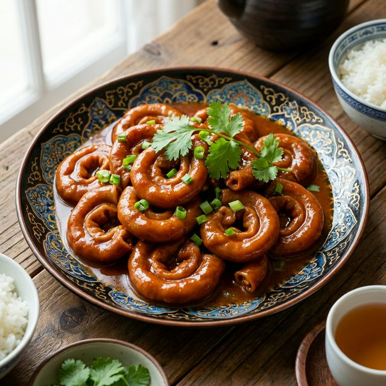

食材准备
- 主料： 猪大肠 (熟) 500g
- 配料： 姜米、蒜米、葱末 适量
- 调料： 生抽、白糖、香醋 适量
- 调料： 胡椒粉、肉桂粉、砂仁粉 少许
- 调料： 黄酒、盐、清汤 适量
- 调料： 香菜 装饰
烹饪步骤
改刀炸制
熟大肠切成2.5厘米长的段。锅中油热后，下入大肠段炸至金黄色且表皮微皱，捞出沥油。
炒底料
锅留少许底油，下入葱、姜、蒜米爆香，加入生抽、白糖、香醋、料酒和适量清汤。
烧制入味
放入炸好的大肠，中小火烧至汤汁粘稠。期间不断摇动锅子，让大肠均匀挂上酱汁。
调五味
加入胡椒粉、砂仁粉、肉桂粉，撒上少许盐调味。这几种香料是大肠产生特殊风味的关键。
淋油装盘
汤汁收干至油亮时，淋入少许亮油。出锅装盘后撒上香菜末。口感软糯，五味交替。